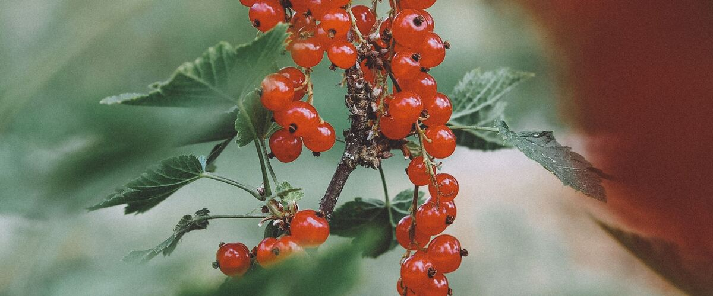

When to plant currants in Shelton, WA
Plant currant bushes in Shelton Mar 16 – May 11.
- Difficulty
- Easy
- Sun
- Full sun west of the Cascades; afternoon shade east
- Spacing
- 4 to 5 feet apart
- Planting depth
- An inch or two deeper than in the pot
- Frost
- Hardy perennial; comes back every year
- First harvest
- A small crop in year two; full crops from year three
Why these dates
Shelton's typical last spring frost is April 27. As a hardy perennial, this crop can go in about 6 weeks before that.
West-side valleys. The Willamette Valley, Puget Sound and southern Oregon valleys. Long frost-free seasons, but soil stays cold and wet into May, so warm crops wait for warm soil, not just the last frost.
How to grow currants in Shelton
- Pick a sunny spot with soil that drains well, and mix in an inch or two of compost.
- Plant currant bushes Mar 16 – May 11, 4 to 5 feet apart. An inch or two deeper than in the pot.
- Prune in late winter: keep about ten stems of different ages and cut out any older than three or four years. Mulch to keep roots cool.
- Harvest: Pick whole clusters (strigs) once all the berries are colored. Red currants hang on the bush for a couple of weeks; black currants are best picked as soon as they're ripe.
Key numbers
- Full sun to part shadeSun
- 5.5–7.0Soil pH
- 15–20 yearsProductive life
- CurrantwormBiggest risk
Top care tip: Prune in late winter, keeping about ten stems and cutting out any older than three or four years.
Growing notes
What makes the difference in Northwest gardens, in plain language.
Red, white and black currants
Red and white currants make sparkling, tart jelly and are lovely raw in small amounts. Black currants are stronger and musky, best for jam, syrup and cordial. All are hardy, long-lived bushes that crop well in cool summers and in spots with a few hours of shade, which makes them good fits for Northwest gardens.
White pine blister rust
Black currants (and to a lesser extent other currants and gooseberries) are an alternate host of white pine blister rust, a disease that kills five-needle pines like western white pine. Plant rust-resistant black currant varieties such as Titania, Consort or Crusader, especially if you live near forests with white pines.
Pruning and pests
Currants fruit best on two- and three-year-old wood. Each late winter, cut out stems older than three or four years at ground level and keep about ten stems of mixed ages. Black currants fruit on younger wood, so prune them a bit harder.
In spring, watch for imported currantworm: green, spotted larvae that start under the lower leaves and can strip a bush in a week. Pick them off or spray with spinosad. Net the bushes as berries color.
Common questions
When is the last frost in Shelton, WA?
Typically April 27. In 9 years out of 10, frost is over by May 12. These are 1991–2020 NOAA climate normals for Shelton Sanderson Field.
Is it too late to plant currants in Shelton?
The spring planting window runs through May 11. Potted plants can still go in later if you water them faithfully through their first summer. Fall planting also works well here.
How long until I can pick currants?
A small crop in year two; full crops from year three. Pick whole clusters (strigs) once all the berries are colored. Red currants hang on the bush for a couple of weeks; black currants are best picked as soon as they're ripe.
Can currants grow in shade?
Yes, better than most fruit. A few hours of direct sun is enough, and afternoon shade helps in hot eastern valleys.
Is red-flowering currant the same plant?
It's a related native shrub grown for its spring flowers. Its berries are edible but dry and bland; grow red, white or black currants for fruit.
Do I need two currant bushes?
Red and white currants are self-fertile and crop well alone. Black currants set fruit alone too, but most give bigger crops with a second variety nearby.
Also plant in Shelton around the same time
Planting dates for currants in nearby areas
- Seattle and Tacoma, WA Mar 1 – Apr 26
- Everett, WA Mar 1 – Apr 26
- Olympia, WA Mar 18 – May 13
- Kent, Renton and Auburn, WA Mar 1 – Apr 26
- Bremerton and Port Orchard, WA Mar 1 – Apr 26
- Portland, OR Mar 1 – Apr 26